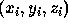
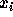
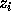

| The Tower of Babylon |
Perhaps you have heard of the legend of the Tower of Babylon. Nowadays many details of this tale have been forgotten. So now, in line with the educational nature of this contest, we will tell you the whole story:
The babylonians had n types of blocks, and an unlimited supply of blocks of each type. Each type-i block was a rectangular solid with linear dimensions  . A block could be reoriented so that any two of its three dimensions determined the dimensions of the base and the other dimension was the height. They wanted to construct the tallest tower possible by stacking blocks. The problem was that, in building a tower, one block could only be placed on top of another block as long as the two base dimensions of the upper block were both strictly smaller than the corresponding base dimensions of the lower block. This meant, for example, that blocks oriented to have equal-sized bases couldn't be stacked.
Your job is to write a program that determines the height of the tallest tower the babylonians can build with a given set of blocks.
The input file will contain one or more test cases. The first line of each test case contains an integer n, representing the number of different blocks in the following data set. The maximum value for n is 30. Each of the next n lines contains three integers representing the values  , and  .
Input is terminated by a value of zero (0) for n.
For each test case, print one line containing the case number (they are numbered sequentially starting from 1) and the height of the tallest possible tower in the format "Case case: maximum height = height"
1 10 20 30 2 6 8 10 5 5 5 7 1 1 1 2 2 2 3 3 3 4 4 4 5 5 5 6 6 6 7 7 7 5 31 41 59 26 53 58 97 93 23 84 62 64 33 83 27 0
Case 1: maximum height = 40 Case 2: maximum height = 21 Case 3: maximum height = 28 Case 4: maximum height = 342